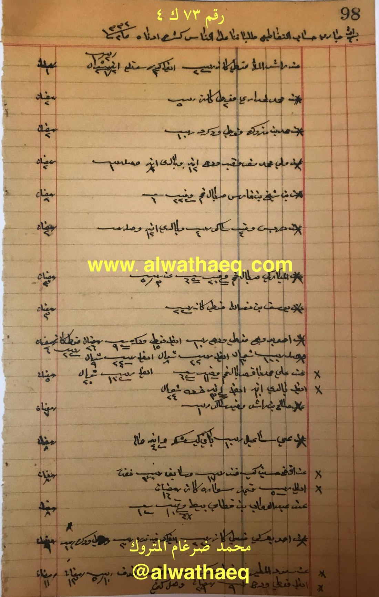
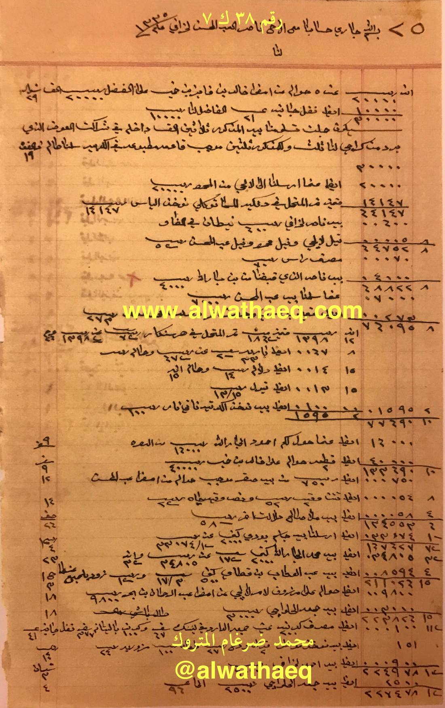
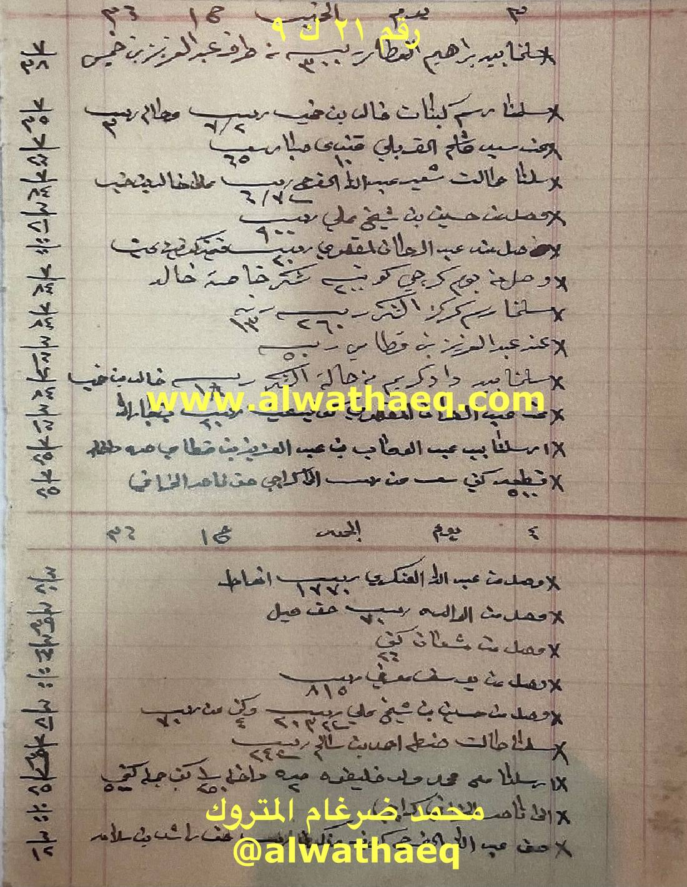

1914 to 1918 · Account statements of the Kuwaiti merchant Mohammed bin Abdullah Al-Matrook
Abdulwahab bin Abdulaziz bin Qatami carries coin for the Al-Matrook house
What it is
In 1917, 500 kani are sent by the hand of Abdulwahab bin Qatami. In 1918 the ledger names him in full, Abdulwahab bin Abdulaziz bin Qatami, beside his father Abdulaziz bin Qatami, and records him receiving a bundle of 500 kani.
Why it matters
The 1918 ledger names father and son together and confirms the line Abdulwahab bin Abdulaziz in the family tree.
Who is meant
Confirmed by the family, and named in full in the 1918 ledger: Abdulwahab bin Abdulaziz bin Qatami.
Page copies




Original text
English translation
Notes
Typed extracts as published by Alwathaeq. Kani is a coin noted in these ledgers. All four ledgers that name him are saved in the family Drive.
Sources
Alwathaeq (alwathaeq.com): the ledgers and letters of the Kuwaiti merchant Mohammed bin Abdullah Al-Matrook, with commentary by Mohammed Dhurgham Al-Matrook. Scans as published by Alwathaeq.
Archive reference
- Document 21, book 9 · 1918
- Document 38, book 7 · 1917
How this text was made: Arabic extracts as published by Alwathaeq. English translation by Claude; please review.
Open in the interactive site